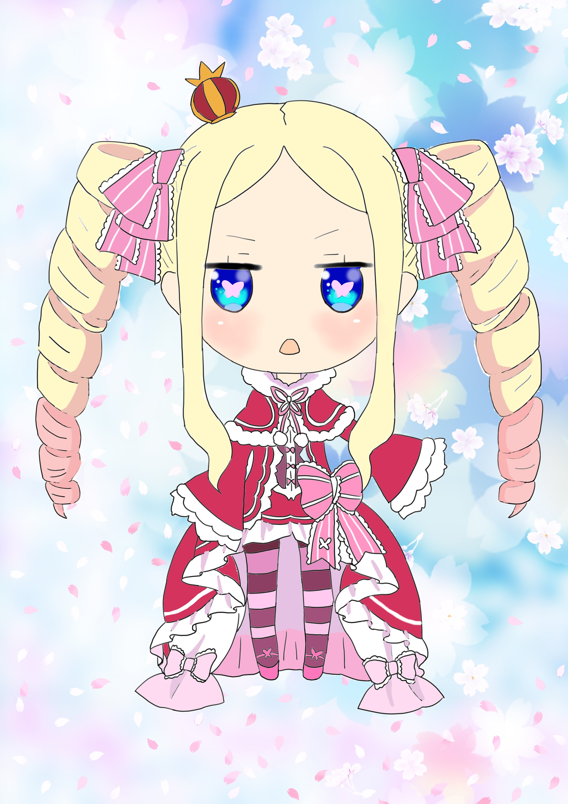

对Pixiv网站用户久留里的作品的模仿。综合各方面信息确认了运城市辖区范围内的铁路线路图并进行绘制
この絵はPixivのユーザー久留里の作品の風格に似せて、ネットで運城市の範囲内の電車線路の情報を探して描いた
架空城际线路图
架空電車線路図
临摹《从零开始的异世界生活》出场角色贝雅托莉丝 其一
「Re:ゼロから始める異世界生活」のキャラクター：ベヤトリスの転写 其一
临摹《从零开始的异世界生活》出场角色贝雅托莉丝 其二
「Re:ゼロから始める異世界生活」のキャラクター：ベヤトリスの転写 其二

临摹《从零开始的异世界生活》出场角色贝雅托莉丝 其三
这三张照着画完后基本掌握了数位板的使用方法
「Re:ゼロから始める異世界生活」のキャラクター：ベヤトリスの転写 其三
PS课程的学习作业
学校のPhotoshop科目の宿題
2018年上海跨年旅行纪念
2018年天津から上海への旅行の記念
纪念碑谷的二创，临摹了部分游戏场景并加以改动
ゲーム「Monument Valley」の二次創作